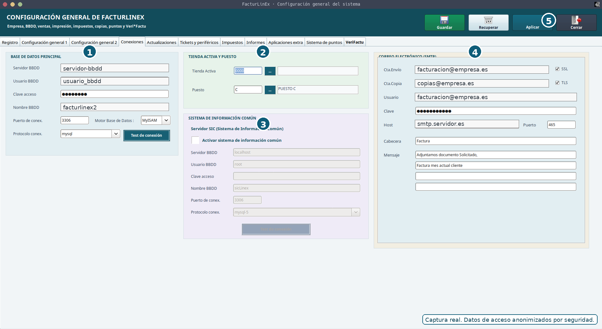
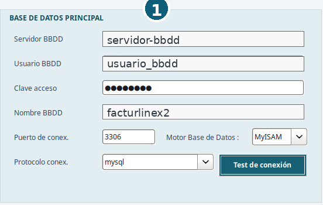
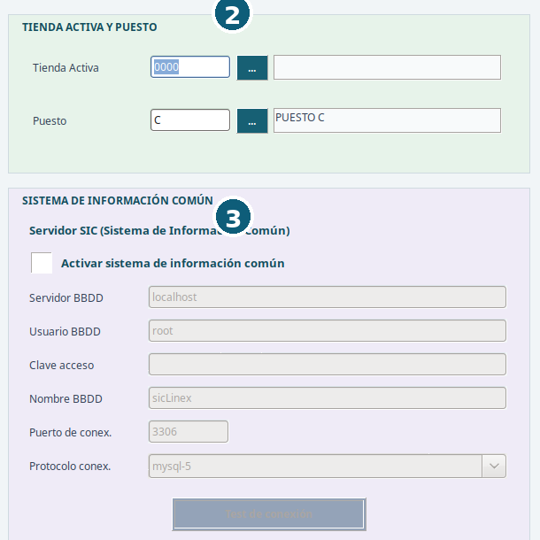
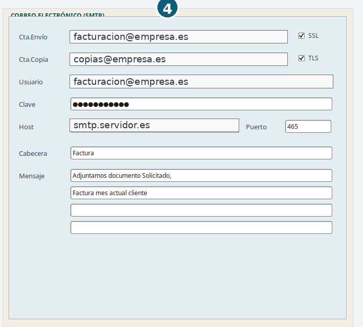
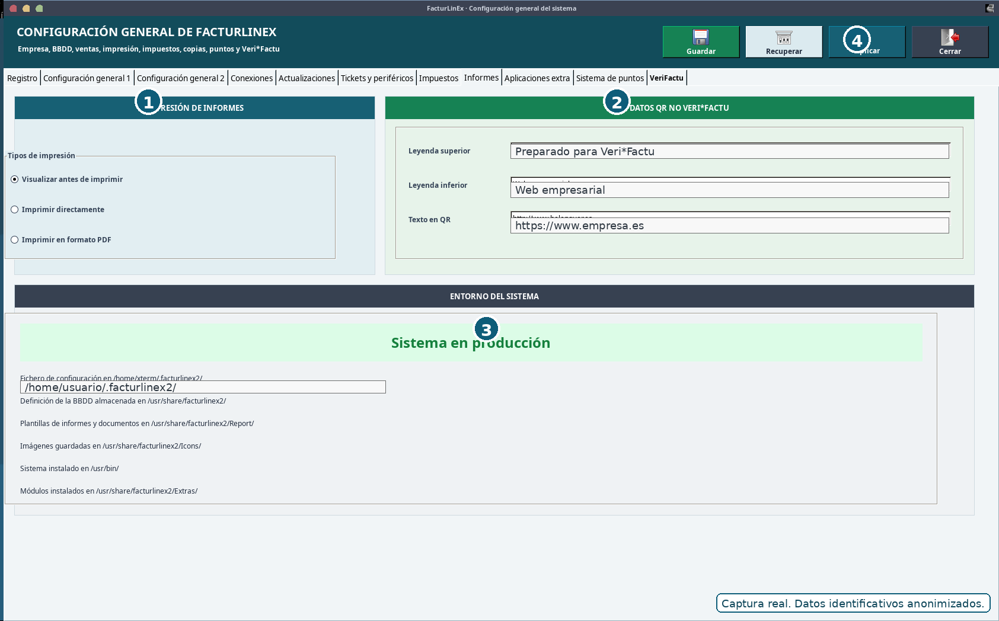
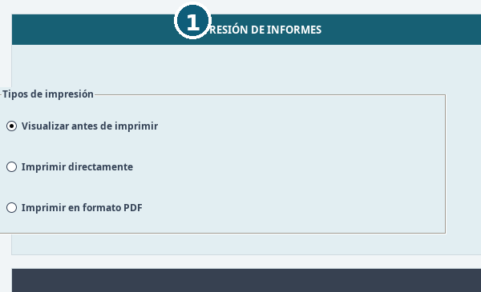
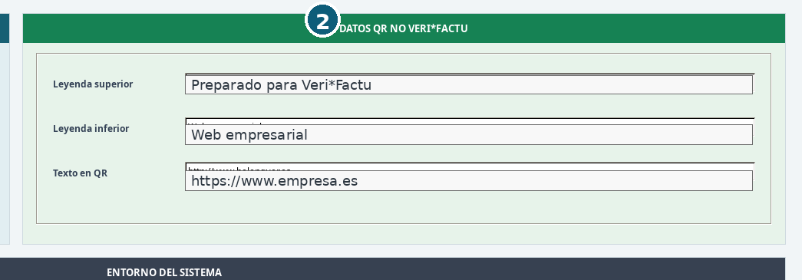
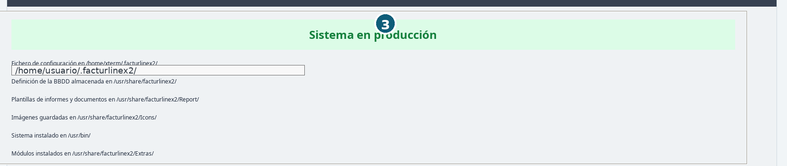
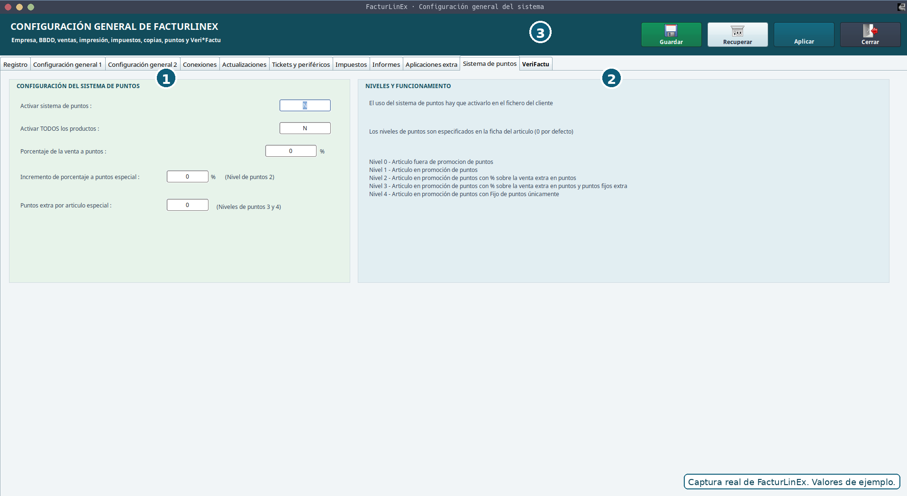

Configuración inicial
Primera edición 1.0 FINAL · Manual completo y auditado
2.1 Orden recomendado de configuración #
- Comprobar la conexión con la base de datos principal.
- Configurar empresa, tienda activa y puesto.
- Revisar series, numeraciones y tipos de documento.
- Configurar impresoras, plantillas y generación de PDF.
- Configurar el correo electrónico y realizar una prueba de envío.
- Revisar impuestos, entorno de producción y opciones de VeriFactu.
- Configurar rutas de informes, recursos, iconos y copias de seguridad.
- Crear o revisar usuarios, permisos y formas de pago.
- Realizar una copia de seguridad y una venta completa de prueba.
2.2 Pantalla general y acciones de configuración #
La ventana Configuración general de FacturLinEx reúne en pestañas los parámetros de empresa, conexión, actualizaciones, tickets y periféricos, impuestos, informes, aplicaciones externas, sistema de puntos y VeriFactu. La pestaña Conexiones permite comprobar en una sola pantalla la base principal, la tienda y el puesto activos, el sistema de información común y el envío SMTP.

| N.º | Zona | Uso principal |
|---|---|---|
| 1 | Base de datos principal | Servidor, usuario, clave, nombre de BBDD, puerto, protocolo, motor y prueba de conexión. |
| 2 | Tienda activa y puesto | Selecciona la tienda de trabajo y el puesto que identificará ventas e históricos. |
| 3 | Sistema de información común | Conexión opcional a una segunda base compartida. Solo debe activarse cuando la instalación la utilice. |
| 4 | Correo electrónico (SMTP) | Cuenta de envío, copia, usuario, clave, servidor, puerto, SSL/TLS, asunto y mensaje predeterminado. |
| 5 | Acciones superiores | Guardar, Recuperar, Aplicar y Cerrar. |
2.3 Conexiones, tienda, puesto y correo #
2.3.1 Base de datos principal #
Los parámetros deben coincidir con el servidor MariaDB que utiliza la instalación. Antes de guardar, pulse Test de conexión. Si la prueba falla, no cambie otros apartados hasta resolver servidor, red, puerto, credenciales o nombre de la base de datos.


- El servidor responde desde el equipo donde se ejecuta FacturLinEx.
- La base de datos indicada existe y corresponde al entorno esperado.
- El usuario dispone de permisos suficientes, pero no más de los necesarios.
- Puerto, protocolo y motor coinciden con la instalación real.
- La prueba de conexión finaliza correctamente antes de Guardar.
2.3.2 Tienda activa y puesto #
La tienda determina el conjunto de tablas y configuraciones sobre el que se trabaja. El puesto identifica la terminal de venta y debe coincidir con la letra mostrada en Ventas y con la registrada en históricos. Cambiar de tienda o puesto no es un cambio visual: puede dirigir las operaciones a otra numeración o conjunto de datos.
2.3.3 Sistema de información común #
El bloque SIC es opcional. Cuando no se utilice, debe permanecer desactivado y sus controles aparecerán inactivos. Al activarlo, configure y pruebe su conexión de forma independiente a la base principal.
2.3.4 Correo electrónico SMTP #

Compruebe cuenta de envío, usuario, clave, servidor, puerto y seguridad. SSL y TLS deben seguir los requisitos del proveedor de correo. La cuenta de copia es opcional. El asunto y el texto predeterminados pueden adaptarse, pero conviene mantenerlos claros y no incluir información confidencial.
- El remitente y el usuario son correctos.
- El servidor y el puerto corresponden al proveedor.
- SSL/TLS están configurados según el servicio utilizado.
- La cuenta puede enviar desde el equipo de FacturLinEx.
- La prueba llega al destinatario y el aviso final queda visible por encima de los demás controles.
2.4 Empresa, tienda, puesto y usuario #
Los datos de empresa se utilizan en documentos, informes y comunicaciones. La tienda determina el ámbito de trabajo; el puesto identifica la terminal; y el usuario debe quedar asociado a las operaciones que realiza.
| Elemento | Comprobaciones |
|---|---|
| Empresa | Razón social, NIF, dirección, datos de contacto, datos fiscales y textos de documentos. |
| Tienda | Código, descripción, rutas y correspondencia con las tablas de la instalación. |
| Puesto | Letra o identificador visible en Ventas y coherente con históricos, caja y series. |
| Usuario | Nombre, credenciales, permisos y asociación correcta a las operaciones. |
2.5 Series y numeraciones #
Cada tipo de documento utiliza series y contadores. Las series permiten separar tiendas, ejercicios, documentos simplificados, rectificativas y otros circuitos. Antes de comenzar a facturar deben revisarse todos los tipos que se utilizarán.
| Tipo | Ejemplos habituales | Uso |
|---|---|---|
| Normal | A26, B26... | Facturas o documentos completos. |
| Simplificada | FS-A26 | Facturas simplificadas o tickets fiscales. |
| Rectificativa normal | R26 | Corrección de factura normal. |
| Rectificativa simplificada | FS-R26 | Corrección de factura simplificada. |
2.6 Impresión, PDF, QR y rutas del sistema #
La pestaña VeriFactu también agrupa opciones de impresión de informes, textos para el QR cuando no se utiliza VeriFactu y un resumen de las rutas efectivas del sistema. Esta información ayuda a comprobar que plantillas, iconos, módulos y ficheros de configuración se buscan en la ubicación correcta.

| N.º | Zona | Qué revisar |
|---|---|---|
| 1 | Impresión de informes | Visualización previa, impresión directa o generación PDF. |
| 2 | Datos QR no VeriFactu | Leyendas y texto usados cuando el circuito no genera el QR fiscal de VeriFactu. |
| 3 | Entorno del sistema | Modo producción y rutas de configuración, BBDD, informes, iconos, ejecutable y extras. |
| 4 | Acciones | Guardar, Recuperar, Aplicar y Cerrar. |


Seleccione una única modalidad de salida según el puesto: visualizar antes de imprimir para revisar, imprimir directamente para un flujo rápido o generar PDF cuando el documento debe archivarse o enviarse. Los textos del bloque QR no VeriFactu no sustituyen al QR fiscal generado por el circuito VeriFactu.
- Impresora de tickets seleccionada y probada.
- Impresora de informes o facturas seleccionada.
- Plantillas .lrf localizadas y compatibles con los campos utilizados.
- Ruta de PDF con permisos de escritura.
- Previsualización, impresión directa y PDF probados según el uso real.
- Las rutas mostradas corresponden a la instalación que se está ejecutando.
2.7 VeriFactu y entorno de producción #

Antes de activar el entorno real deben revisarse los datos de empresa, las series, la fecha y hora del sistema, el encadenamiento, la cola y la configuración de envío. El rótulo Sistema en producción debe ser visible y no debe confundirse con un entorno de pruebas.
2.8 Sistema de puntos #
El sistema de puntos se activa globalmente en Configuración y además debe habilitarse en la ficha del cliente. Los niveles se asignan en la ficha del artículo; el nivel 0 es el valor predeterminado.

| Nivel | Comportamiento |
|---|---|
| 0 | Artículo fuera de promoción de puntos. |
| 1 | Artículo en promoción de puntos. |
| 2 | Promoción con porcentaje extra sobre la venta convertido en puntos. |
| 3 | Promoción con porcentaje extra y puntos fijos adicionales. |
| 4 | Promoción basada únicamente en puntos fijos. |
2.9 Copias de seguridad iniciales #
Debe existir al menos una copia completa antes de comenzar a trabajar y otra antes de cualquier cambio importante. Una copia solo es fiable cuando puede restaurarse correctamente.
- Guardar una copia fuera del servidor principal.
- Conservar varias fechas, no únicamente la última.
- Registrar qué versión del programa y de la base de datos corresponde a cada copia.
- Probar periódicamente la restauración en un entorno separado.
2.10 Lista final de verificación #
- La base de datos principal supera la prueba de conexión.
- Tienda, puesto y usuario corresponden al lugar de trabajo.
- Las series y numeraciones están revisadas.
- Impresoras, plantillas y PDF funcionan.
- El correo SMTP ha superado una prueba real.
- Las rutas mostradas existen y son accesibles.
- VeriFactu está en el entorno correcto y el monitor puede consultarse.
- El sistema de puntos está desactivado o configurado de forma coherente.
- Existe una copia de seguridad verificable.
- Se ha realizado una venta completa de prueba.